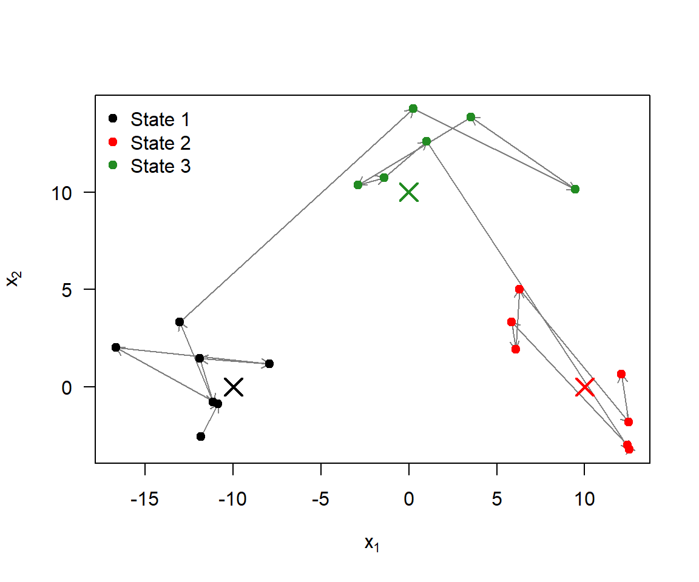
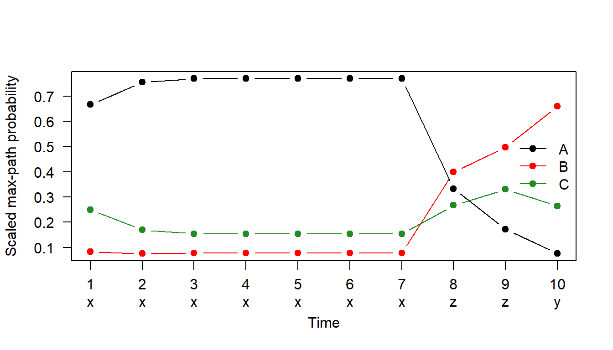
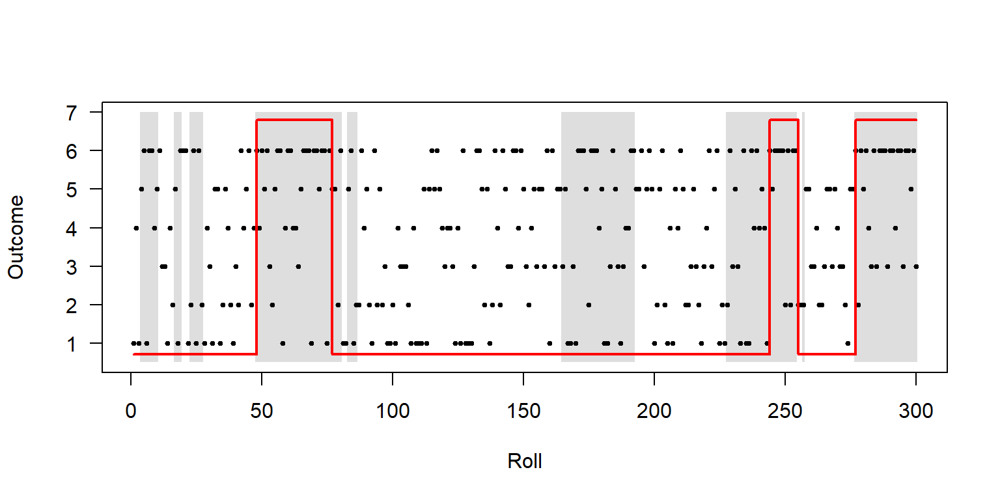

Code
library(SimDesign) # rmvnorm()The code here builds on the course notes (Chapter 4): the scaled forward recursion from pois2.hmm.ll and the log-scale Viterbi loop from the genetic example.
First set up the transition matrix and the state distributions. sigma has to exist as a \(2 \times 2 \times 3\) array before the slices can be filled in
set.seed(2026)
n <- 20
m <- 3
Gamma <- matrix(c(0.8, 0.1, 0.1,
0.1, 0.8, 0.1,
0.1, 0.1, 0.8), ncol = 3, byrow = TRUE)
mu <- 10 * matrix(c(-1,0,1,0,0,1), ncol = 2, byrow = TRUE)
sf <- 10 # scaling factor
sigma <- array(0, dim = c(2, 2, m))
sigma[,,1] <- sf * matrix(c(1, 1/2, 1/2, 1), nrow = 2)
sigma[,,2] <- sf * matrix(c(1, -1/2, -1/2, 1), nrow = 2)
sigma[,,3] <- sf * matrix(c(3, 0, 0, 1/2), nrow = 2)The states are simulated first with sample, using the row of \(\Gamma\) for the previous state. Then each observation is drawn from the normal distribution for its state. \(\Gamma\) is symmetric, so its stationary distribution is \((1/3, 1/3, 1/3)\), and I use that for the first state.
cols <- c("black", "red", "forestgreen")
plot(Y, type = "n", xlab = expression(x[1]), ylab = expression(x[2]), las = 1)
arrows(Y[-n, 1], Y[-n, 2], Y[-1, 1], Y[-1, 2],
length = 0.08, col = "grey50")
points(Y, pch = 19, col = cols[z])
points(mu, pch = 4, cex = 2, lwd = 2, col = cols)
legend("topleft", legend = paste("State", 1:3), col = cols, pch = 19, bty = "n")
The points cluster around the three means (crosses). Because the diagonal of \(\Gamma\) is 0.8, the chain stays put for a few steps at a time, so the path mostly hops around within one cluster before jumping to another. State 3 has the largest variance in \(x_1\) (30 vs 5 in \(x_2\)), so it is the most spread out sideways. States 1 and 2 have the same variances but opposite correlations (\(\pm 0.5\)), which is hard to see with only 7 points each.
If we only had the \(Y_t\), we would need to estimate:
| Parameters | Count |
|---|---|
| Transition probabilities \(\gamma_{ij}\) (\(3 \times 2\), rows sum to 1) | 6 |
| Means \(\mu_k\) (\(3 \times 2\)) | 6 |
| Covariance matrices \(\Sigma_k\) (3 unique entries each, symmetric) | 9 |
| Total | 21 |
If the initial distribution \(\delta\) is estimated too (rather than taken as the stationary distribution), that adds \(m - 1 = 2\), giving 23. This is a lot of parameters for 20 observations.
This follows the genetic example code in the notes, made general for any number of states, with the back-tracing step added. I use natural logs instead of log2. The path is the same either way.
obs <- c("x", "x", "x", "x", "x", "x", "x", "z", "z", "y")
obsposs <- c("x", "y", "z")
states <- c("A", "B", "C")
init <- c(0.4, 0.3, 0.3)
tpm <- matrix(c(0.5, 0.3, 0.2, 0.1, 0.6, 0.3, 0.2, 0.2, 0.6), byrow = TRUE, ncol = 3)
emmprob <- matrix(c(0.6, 0.2, 0.2, 0.1, 0.5, 0.4, 0.3, 0.3, 0.4), byrow = TRUE, ncol = 3)viterbi <- function(obs, obsposs, init, tpm, emmprob) {
n <- length(obs)
m <- length(init)
em <- log(emmprob)
G <- log(tpm)
xi <- matrix(0, nrow = m, ncol = n)
o1 <- which(obs[1] == obsposs)
xi[, 1] <- log(init) + em[, o1]
for (i in 2:n) {
oi <- which(obs[i] == obsposs)
for (j in 1:m) {
xi[j, i] <- max(xi[, i-1] + G[, j]) + em[j, oi]
}
}
# back-tracing
S <- numeric(n)
S[n] <- which.max(xi[, n])
for (t in (n-1):1) {
S[t] <- which.max(xi[, t] + G[, S[t+1]])
}
list(xi = xi, path = S)
}
vit <- viterbi(obs, obsposs, init, tpm, emmprob)
round(vit$xi, 3) [,1] [,2] [,3] [,4] [,5] [,6] [,7] [,8] [,9] [,10]
[1,] -1.427 -2.631 -3.835 -5.039 -6.243 -7.447 -8.651 -10.954 -13.256 -15.559
[2,] -3.507 -4.934 -6.138 -7.342 -8.546 -9.750 -10.954 -10.771 -12.198 -13.402
[3,] -2.408 -4.123 -5.444 -6.648 -7.852 -9.056 -10.260 -11.177 -12.604 -14.319 [1] "A" "A" "A" "A" "A" "A" "A" "B" "B" "B"The most likely state sequence is A A A A A A A B B B.
As a check, there are only \(3^{10} = 59\,049\) possible paths here, so I can also score every one of them and take the best (the slow way the notes warn about).
[1] "A" "A" "A" "A" "A" "A" "A" "B" "B" "B"Same answer.
xi.scaled <- apply(vit$xi, 2, function(v) exp(v - max(v)) / sum(exp(v - max(v))))
true <- c("A", "C", "A", "A", "A", "A", "A", "B", "B", "B")
matplot(1:10, t(xi.scaled), type = "b", pch = 19, lty = 1, col = cols,
xlab = "Time", ylab = "Scaled max-path probability", las = 1, xaxt = "n")
axis(1, at = 1:10, labels = paste0(1:10, "\n", obs), padj = 0.5)
legend("right", legend = states, col = cols, pch = 19, lty = 1, bty = "n")
x (0.6), and A is the starting state with the highest probability. So the run of seven xs is decoded as A.z is most likely from B or C (0.4 each). B is easier to reach from A (0.3 vs 0.2) and more persistent (0.6), so the two zs go to B.y is emitted with probability 0.5 by B, and staying in B has probability 0.6, so the last observation is B too. [,1] [,2] [,3] [,4] [,5] [,6] [,7] [,8] [,9] [,10]
obs "x" "x" "x" "x" "x" "x" "x" "z" "z" "y"
viterbi "A" "A" "A" "A" "A" "A" "A" "B" "B" "B"
true "A" "C" "A" "A" "A" "A" "A" "B" "B" "B" [1] 0.9Viterbi gets 9 out of 10 right. It misses time 2, where the true state was C but x was emitted. Since C only emits x with probability 0.3, and a single visit to C means two unlikely transitions (A→C and C→A), the best path just stays in A. Viterbi picks the best whole path, so short visits to a state like this get smoothed out.
\(\Gamma = \begin{pmatrix} 0.1 & 0.9 \\ 0.4 & 0.6 \end{pmatrix}\), \(\lambda = (1, 3)\). The chain is stationary, so \(\delta\) solves \(\delta \Gamma = \delta\): \(0.9\delta_1 = 0.4\delta_2\), which gives \(\delta = (4/13, 9/13)\).
[1] 0.3076923 0.6923077There are \(2^3 = 8\) possible state sequences. For each one,
\[P(c_1, c_2, c_3) = \delta_{c_1} \gamma_{c_1 c_2} \gamma_{c_2 c_3}, \qquad P(0, 2, 1 \mid c_1, c_2, c_3) = p_{c_1}(0)\, p_{c_2}(2)\, p_{c_3}(1)\]
and the probability of the observations is the sum of the products.
seqs <- expand.grid(c3 = 1:2, c2 = 1:2, c1 = 1:2)[, 3:1]
p.seq <- delta[seqs$c1] * Gamma3[cbind(seqs$c1, seqs$c2)] * Gamma3[cbind(seqs$c2, seqs$c3)]
p.obs <- dpois(x3[1], lambda[seqs$c1]) * dpois(x3[2], lambda[seqs$c2]) * dpois(x3[3], lambda[seqs$c3])
tab3 <- data.frame(seqs, P.seq = p.seq, P.obs.given.seq = p.obs, product = p.seq * p.obs)
knitr::kable(tab3, digits = 6)| c1 | c2 | c3 | P.seq | P.obs.given.seq | product |
|---|---|---|---|---|---|
| 1 | 1 | 1 | 0.003077 | 0.024894 | 0.000077 |
| 1 | 1 | 2 | 0.027692 | 0.010107 | 0.000280 |
| 1 | 2 | 1 | 0.110769 | 0.030321 | 0.003359 |
| 1 | 2 | 2 | 0.166154 | 0.012310 | 0.002045 |
| 2 | 1 | 1 | 0.027692 | 0.003369 | 0.000093 |
| 2 | 1 | 2 | 0.249231 | 0.001368 | 0.000341 |
| 2 | 2 | 1 | 0.166154 | 0.004103 | 0.000682 |
| 2 | 2 | 2 | 0.249231 | 0.001666 | 0.000415 |
[1] 1[1] 0.00729174 [,1]
[1,] 0.00729174Both ways give \(\Pr(X_1 = 0, X_2 = 2, X_3 = 1) \approx\) 0.00729. The matrix product does the sum over the 8 paths for us: each \(\Gamma \mathbf{P}(x)\) step sums over the previous state, which is why it grows linearly in \(T\) and not as \(m^T\).
If the Markov chain degenerates to independent draws, then the next state does not depend on the current one, so every row of \(\Gamma\) is the same, and equal to \(\delta\):
\[\Gamma = \begin{pmatrix} \delta \\ \vdots \\ \delta \end{pmatrix} = \mathbf{1}'\delta.\]
Substituting this into the likelihood:
\[ \begin{aligned} L_T &= \delta \mathbf{P}(x_1)\,\mathbf{1}'\delta\, \mathbf{P}(x_2)\,\mathbf{1}'\delta \cdots \mathbf{1}'\delta\, \mathbf{P}(x_T)\mathbf{1}' \\ &= \big(\delta \mathbf{P}(x_1)\mathbf{1}'\big)\big(\delta \mathbf{P}(x_2)\mathbf{1}'\big)\cdots\big(\delta \mathbf{P}(x_T)\mathbf{1}'\big) \end{aligned} \]
since each bracket \(\delta \mathbf{P}(x_j)\mathbf{1}'\) is a scalar (\(1 \times m\) times \(m \times m\) times \(m \times 1\)), and matrix multiplication is associative, so we can regroup. \(\mathbf{P}(x_j)\) is diagonal, so
\[\delta \mathbf{P}(x_j)\mathbf{1}' = \sum_{i=1}^m \delta_i\, p_i(x_j, \theta_i).\]
Hence
\[L_T(\theta_1, \ldots, \theta_m, \delta_1, \ldots, \delta_m) = \prod_{j=1}^{n} \sum_{i=1}^{m} \delta_i\, p_i(x_j, \theta_i),\]
which is the independent mixture likelihood from the start of the notes.
A quick numerical check with the Question 3 values, but with independent states:
[1] 160ch
A B C
97 42 21 to
from A B C
A 54 21 21
B 21 21 0
C 21 0 0What stands out in the transition counts:
[1] 21 [,1] [,2] [,3] [,4] [,5] [,6] [,7] [,8] [,9] [,10] [,11] [,12] [,13] [,14]
runA 2 1 9 5 6 12 1 2 3 3 4 2 3 4
runB 3 3 3 1 4 1 1 2 4 1 1 1 2 4
[,15] [,16] [,17] [,18] [,19] [,20] [,21]
runA 1 6 1 3 2 4 1
runB 2 1 1 1 3 1 2 meanA meanB
3.571429 2.000000 The A at the start of a block and the A just before C behave differently (one repeats, the other is always exactly one symbol and is always followed by C). That is the hidden part: the same symbol comes from two different states. So I use 4 states:
| State | Meaning | Emits |
|---|---|---|
| 1 | A-run | A |
| 2 | B-run | B |
| 3 | single A after the Bs | A |
| 4 | end of block | C |
Transition matrix. The run lengths are geometric, so the self-transition probability is estimated by (number of symbols in the state − number of times we leave it) / number of symbols. The last A has no transition after it, so it is left out.
\[ \Gamma = \begin{pmatrix} 0.72 & 0.28 & 0 & 0 \\ 0 & 0.5 & 0.5 & 0 \\ 0 & 0 & 0 & 1 \\ 1 & 0 & 0 & 0 \end{pmatrix} \]
Emission matrix (rows = states, columns = A, B, C). Each state only ever produces one symbol in the data:
\[ B = \begin{pmatrix} 1 & 0 & 0 \\ 0 & 1 & 0 \\ 1 & 0 & 0 \\ 0 & 0 & 1 \end{pmatrix} \]
Initial probabilities. The string starts with an A-run, so \(\delta = (1, 0, 0, 0)\). With a single sequence there is only one start to learn from, so this is a weak estimate.
A simpler 3-state model (one state per letter) can’t produce the “always A then C after the Bs” pattern: a state that emits A and can go to both B and C would allow strings like …AAC… or …BAB…, which never happen here.
[1] 60 [,1] [,2] [,3]
[1,] "C" "E" "F"
[2,] "B" "A" "F"
[3,] "C" "E" "F"
[4,] "B" "A" "F"
[5,] "B" "A" "F"
[6,] "C" "E" "F" letter
position A B C D E F
1 0 8 12 0 0 0
2 10 0 0 0 10 0
3 0 0 0 4 0 16Splitting the string into blocks of three, the letters never mix between positions: position 1 is always B or C, position 2 is always A or E, position 3 is always D or F. So the string comes from a 3-state chain that cycles 1 → 2 → 3 → 1 every time, and each state picks one of two letters.
Transition matrix (deterministic cycle, never violated in 59 transitions):
\[ \Gamma = \begin{pmatrix} 0 & 1 & 0 \\ 0 & 0 & 1 \\ 1 & 0 & 0 \end{pmatrix} \]
Emission matrix (columns A–F), using the relative frequencies at each position out of 20:
\[ B = \begin{pmatrix} 0 & 0.4 & 0.6 & 0 & 0 & 0 \\ 0.5 & 0 & 0 & 0 & 0.5 & 0 \\ 0 & 0 & 0 & 0.2 & 0 & 0.8 \end{pmatrix} \]
Initial probabilities. The string starts with C, which only state 1 emits, so \(\delta = (1, 0, 0)\).
I also checked whether the letter in one position depends on the letter before it (e.g. whether B tends to be followed by A):
pos2
pos1 A E
B 4 4
C 6 6 pos3
pos2 D F
A 2 8
E 2 8The rows are proportional (B and C are each followed by A and E equally often; A and E are each followed by D and F in a 1:4 ratio). So the letter in one position tells us nothing about the next, and independent emissions within each state fit.
State 1 is the fair die, state 2 the loaded die.
set.seed(6)
Gamma6 <- matrix(c(0.95, 0.05,
0.10, 0.90), byrow = TRUE, ncol = 2)
emis6 <- rbind(fair = rep(1/6, 6),
loaded = c(rep(1/10, 5), 5/10))
sim.casino <- function(n, Gamma, emis, init = c(1, 0)) {
z <- numeric(n)
x <- numeric(n)
z[1] <- sample(1:2, 1, prob = init)
x[1] <- sample(1:6, 1, prob = emis[z[1], ])
for (t in 2:n) {
z[t] <- sample(1:2, 1, prob = Gamma[z[t-1], ])
x[t] <- sample(1:6, 1, prob = emis[z[t], ])
}
data.frame(t = 1:n, die = z, roll = x)
}
casino <- sim.casino(300, Gamma6, emis6)
prop.table(table(casino$die))
1 2
0.56 0.44 roll
die 1 2 3 4 5 6
1 0.20 0.15 0.17 0.12 0.21 0.15
2 0.13 0.08 0.11 0.10 0.14 0.44The stationary distribution is \(\delta = (2/3, 1/3)\), so in the long run the loaded die is used a third of the time. In this run of 300 it was used 44%, because the loaded stretches are long (about 10 rolls on average) so a few extra ones make a big difference. When the loaded die is used, close to half the rolls are 6.
Since we know the true parameters, the Viterbi function from Question 2 can be reused to see how well we can tell when the casino cheated:
vit6 <- viterbi(casino$roll, 1:6, init = c(1, 0), tpm = Gamma6, emmprob = emis6)
plot(casino$t, casino$roll, pch = 19, cex = 0.5, las = 1,
xlab = "Roll", ylab = "Outcome", ylim = c(0.5, 7))
rect(casino$t - 0.5, 0.5, casino$t + 0.5, 7,
col = ifelse(casino$die == 2, adjustcolor("grey", 0.5), NA), border = NA)
points(casino$t, casino$roll, pch = 19, cex = 0.5)
lines(casino$t, ifelse(vit6$path == 2, 6.8, 0.7), type = "s", col = "red", lwd = 2)
mean(vit6$path == casino$die)[1] 0.7733333
Viterbi gets 77% of the states right. It picks up the loaded stretches with lots of 6s (around rolls 50–80 and from 275 onwards) and the end of the one around 230–255. It misses the short loaded stretches, and also the one around rolls 165–190, where only 9 of the 28 rolls were 6s (much less than the expected half). A few 6s close together can easily come from the fair die too, so the evidence has to build up before the path switches.
\(\delta = \frac{1}{3}(1, 2)\), \(P(X_t = 1 \mid C_t = 1) = 0.5\), \(P(X_t = 1 \mid C_t = 2) = 1\).
\[P(X_t = 0) = \delta_1 (0.5) + \delta_2 (0) = \tfrac{1}{3} \cdot \tfrac{1}{2} = \tfrac{1}{6}\]
\[P(X_t = 1) = \delta_1 (0.5) + \delta_2 (1) = \tfrac{1}{6} + \tfrac{2}{3} = \tfrac{5}{6}\]
Same structure as pois2.hmm.ll in the notes. The chain is stationary (\(\delta\Gamma = \delta\)), so starting with phi <- delta and multiplying by tpm already at \(t = 1\) makes no difference.
bern2.hmm.lik <- function(x, delta, tpm, p1) {
n <- length(x)
phi <- delta
ll <- 0
for (i in 1:n) {
Pi <- diag(if (x[i] == 1) p1 else 1 - p1)
v <- phi %*% tpm %*% Pi
u <- v %*% c(1, 1)
ll <- ll + log(u)
phi <- v / c(u)
}
return(exp(ll))
}
L111 <- bern2.hmm.lik(c(1, 1, 1), delta7, Gamma7, p1)
c(L111, 29/48)[1] 0.6041667 0.6041667The function gives \(L = 29/48 \approx 0.6042\) for \((1, 1, 1)\), which matches the check.
---
title: "Hidden Markov Models"
---
```{r}
#| label: setup
#| message: false
#| warning: false
library(SimDesign) # rmvnorm()
```
The code here builds on the course notes (Chapter 4): the scaled forward recursion from `pois2.hmm.ll` and the log-scale Viterbi loop from the genetic example.
## Question 1
### Simulating from a three-state bivariate Gaussian HMM
First set up the transition matrix and the state distributions. `sigma` has to exist as a $2 \times 2 \times 3$ array before the slices can be filled in
```{r}
#| label: q1-setup
set.seed(2026)
n <- 20
m <- 3
Gamma <- matrix(c(0.8, 0.1, 0.1,
0.1, 0.8, 0.1,
0.1, 0.1, 0.8), ncol = 3, byrow = TRUE)
mu <- 10 * matrix(c(-1,0,1,0,0,1), ncol = 2, byrow = TRUE)
sf <- 10 # scaling factor
sigma <- array(0, dim = c(2, 2, m))
sigma[,,1] <- sf * matrix(c(1, 1/2, 1/2, 1), nrow = 2)
sigma[,,2] <- sf * matrix(c(1, -1/2, -1/2, 1), nrow = 2)
sigma[,,3] <- sf * matrix(c(3, 0, 0, 1/2), nrow = 2)
```
The states are simulated first with `sample`, using the row of $\Gamma$ for the previous state. Then each observation is drawn from the normal distribution for its state. $\Gamma$ is symmetric, so its stationary distribution is $(1/3, 1/3, 1/3)$, and I use that for the first state.
```{r}
#| label: q1-simulate
z <- numeric(n)
z[1] <- sample(1:m, 1, prob = rep(1/3, 3))
for (t in 2:n) {
z[t] <- sample(1:m, 1, prob = Gamma[z[t-1], ])
}
Y <- matrix(0, nrow = n, ncol = 2)
for (t in 1:n) {
Y[t, ] <- rmvnorm(1, mean = mu[z[t], ], sigma = sigma[,,z[t]])
}
z
```
### Plot of the observations
```{r}
#| label: fig-q1
#| fig-cap: "Simulated observations coloured by true state. Arrows show the order in time."
#| fig-width: 6
#| fig-height: 5
cols <- c("black", "red", "forestgreen")
plot(Y, type = "n", xlab = expression(x[1]), ylab = expression(x[2]), las = 1)
arrows(Y[-n, 1], Y[-n, 2], Y[-1, 1], Y[-1, 2],
length = 0.08, col = "grey50")
points(Y, pch = 19, col = cols[z])
points(mu, pch = 4, cex = 2, lwd = 2, col = cols)
legend("topleft", legend = paste("State", 1:3), col = cols, pch = 19, bty = "n")
```
The points cluster around the three means (crosses). Because the diagonal of $\Gamma$ is 0.8, the chain stays put for a few steps at a time, so the path mostly hops around within one cluster before jumping to another. State 3 has the largest variance in $x_1$ (30 vs 5 in $x_2$), so it is the most spread out sideways. States 1 and 2 have the same variances but opposite correlations ($\pm 0.5$), which is hard to see with only 7 points each.
### Parameters to estimate
If we only had the $Y_t$, we would need to estimate:
| Parameters | Count |
|---|---|
| Transition probabilities $\gamma_{ij}$ ($3 \times 2$, rows sum to 1) | 6 |
| Means $\mu_k$ ($3 \times 2$) | 6 |
| Covariance matrices $\Sigma_k$ (3 unique entries each, symmetric) | 9 |
| **Total** | **21** |
If the initial distribution $\delta$ is estimated too (rather than taken as the stationary distribution), that adds $m - 1 = 2$, giving 23. This is a lot of parameters for 20 observations.
## Question 2
### Viterbi algorithm
This follows the genetic example code in the notes, made general for any number of states, with the back-tracing step added. I use natural logs instead of `log2`. The path is the same either way.
```{r}
#| label: q2-setup
obs <- c("x", "x", "x", "x", "x", "x", "x", "z", "z", "y")
obsposs <- c("x", "y", "z")
states <- c("A", "B", "C")
init <- c(0.4, 0.3, 0.3)
tpm <- matrix(c(0.5, 0.3, 0.2, 0.1, 0.6, 0.3, 0.2, 0.2, 0.6), byrow = TRUE, ncol = 3)
emmprob <- matrix(c(0.6, 0.2, 0.2, 0.1, 0.5, 0.4, 0.3, 0.3, 0.4), byrow = TRUE, ncol = 3)
```
```{r}
#| label: q2-viterbi
viterbi <- function(obs, obsposs, init, tpm, emmprob) {
n <- length(obs)
m <- length(init)
em <- log(emmprob)
G <- log(tpm)
xi <- matrix(0, nrow = m, ncol = n)
o1 <- which(obs[1] == obsposs)
xi[, 1] <- log(init) + em[, o1]
for (i in 2:n) {
oi <- which(obs[i] == obsposs)
for (j in 1:m) {
xi[j, i] <- max(xi[, i-1] + G[, j]) + em[j, oi]
}
}
# back-tracing
S <- numeric(n)
S[n] <- which.max(xi[, n])
for (t in (n-1):1) {
S[t] <- which.max(xi[, t] + G[, S[t+1]])
}
list(xi = xi, path = S)
}
vit <- viterbi(obs, obsposs, init, tpm, emmprob)
round(vit$xi, 3)
states[vit$path]
```
The most likely state sequence is **`r paste(states[vit$path], collapse = " ")`**.
As a check, there are only $3^{10} = 59\,049$ possible paths here, so I can also score every one of them and take the best (the slow way the notes warn about).
```{r}
#| label: q2-bruteforce
paths <- as.matrix(expand.grid(rep(list(1:3), length(obs))))
o <- match(obs, obsposs)
logjoint <- apply(paths, 1, function(s) {
log(init[s[1]]) + sum(log(tpm[cbind(s[-10], s[-1])])) + sum(log(emmprob[cbind(s, o)]))
})
states[paths[which.max(logjoint), ]]
```
Same answer.
### Explaining the result
```{r}
#| label: fig-q2
#| fig-cap: "Viterbi max-path probabilities for each state, scaled to sum to 1 at each time. The x-axis shows the observation at each time."
#| fig-width: 7
#| fig-height: 4
xi.scaled <- apply(vit$xi, 2, function(v) exp(v - max(v)) / sum(exp(v - max(v))))
true <- c("A", "C", "A", "A", "A", "A", "A", "B", "B", "B")
matplot(1:10, t(xi.scaled), type = "b", pch = 19, lty = 1, col = cols,
xlab = "Time", ylab = "Scaled max-path probability", las = 1, xaxt = "n")
axis(1, at = 1:10, labels = paste0(1:10, "\n", obs), padj = 0.5)
legend("right", legend = states, col = cols, pch = 19, lty = 1, bty = "n")
```
- State A is the state most likely to emit `x` (0.6), and A is the starting state with the highest probability. So the run of seven `x`s is decoded as A.
- `z` is most likely from B or C (0.4 each). B is easier to reach from A (0.3 vs 0.2) and more persistent (0.6), so the two `z`s go to B.
- `y` is emitted with probability 0.5 by B, and staying in B has probability 0.6, so the last observation is B too.
### Comparison with the true states
```{r}
#| label: q2-compare
rbind(obs = obs, viterbi = states[vit$path], true = true)
mean(states[vit$path] == true)
```
Viterbi gets 9 out of 10 right. It misses time 2, where the true state was C but `x` was emitted. Since C only emits `x` with probability 0.3, and a single visit to C means two unlikely transitions (A→C and C→A), the best path just stays in A. Viterbi picks the best *whole* path, so short visits to a state like this get smoothed out.
## Question 3
$\Gamma = \begin{pmatrix} 0.1 & 0.9 \\ 0.4 & 0.6 \end{pmatrix}$, $\lambda = (1, 3)$. The chain is stationary, so $\delta$ solves $\delta \Gamma = \delta$: $0.9\delta_1 = 0.4\delta_2$, which gives $\delta = (4/13, 9/13)$.
```{r}
#| label: q3-setup
Gamma3 <- matrix(c(0.1, 0.9, 0.4, 0.6), byrow = TRUE, ncol = 2)
lambda <- c(1, 3)
x3 <- c(0, 2, 1)
delta <- solve(t(diag(2) - Gamma3 + 1), rep(1, 2))
delta
```
### (a) Summing over all state sequences
There are $2^3 = 8$ possible state sequences. For each one,
$$P(c_1, c_2, c_3) = \delta_{c_1} \gamma_{c_1 c_2} \gamma_{c_2 c_3}, \qquad P(0, 2, 1 \mid c_1, c_2, c_3) = p_{c_1}(0)\, p_{c_2}(2)\, p_{c_3}(1)$$
and the probability of the observations is the sum of the products.
```{r}
#| label: q3a
seqs <- expand.grid(c3 = 1:2, c2 = 1:2, c1 = 1:2)[, 3:1]
p.seq <- delta[seqs$c1] * Gamma3[cbind(seqs$c1, seqs$c2)] * Gamma3[cbind(seqs$c2, seqs$c3)]
p.obs <- dpois(x3[1], lambda[seqs$c1]) * dpois(x3[2], lambda[seqs$c2]) * dpois(x3[3], lambda[seqs$c3])
tab3 <- data.frame(seqs, P.seq = p.seq, P.obs.given.seq = p.obs, product = p.seq * p.obs)
knitr::kable(tab3, digits = 6)
sum(tab3$P.seq) # check: sums to 1
sum(tab3$product)
```
### (b) Matrix formula
```{r}
#| label: q3b
P <- function(x) diag(dpois(x, lambda))
delta %*% P(0) %*% Gamma3 %*% P(2) %*% Gamma3 %*% P(1) %*% c(1, 1)
```
Both ways give $\Pr(X_1 = 0, X_2 = 2, X_3 = 1) \approx$ `r round(sum(tab3$product), 5)`. The matrix product does the sum over the 8 paths for us: each $\Gamma \mathbf{P}(x)$ step sums over the previous state, which is why it grows linearly in $T$ and not as $m^T$.
## Question 4
If the Markov chain degenerates to independent draws, then the next state does not depend on the current one, so every row of $\Gamma$ is the same, and equal to $\delta$:
$$\Gamma = \begin{pmatrix} \delta \\ \vdots \\ \delta \end{pmatrix} = \mathbf{1}'\delta.$$
Substituting this into the likelihood:
$$
\begin{aligned}
L_T &= \delta \mathbf{P}(x_1)\,\mathbf{1}'\delta\, \mathbf{P}(x_2)\,\mathbf{1}'\delta \cdots \mathbf{1}'\delta\, \mathbf{P}(x_T)\mathbf{1}' \\
&= \big(\delta \mathbf{P}(x_1)\mathbf{1}'\big)\big(\delta \mathbf{P}(x_2)\mathbf{1}'\big)\cdots\big(\delta \mathbf{P}(x_T)\mathbf{1}'\big)
\end{aligned}
$$
since each bracket $\delta \mathbf{P}(x_j)\mathbf{1}'$ is a scalar ($1 \times m$ times $m \times m$ times $m \times 1$), and matrix multiplication is associative, so we can regroup. $\mathbf{P}(x_j)$ is diagonal, so
$$\delta \mathbf{P}(x_j)\mathbf{1}' = \sum_{i=1}^m \delta_i\, p_i(x_j, \theta_i).$$
Hence
$$L_T(\theta_1, \ldots, \theta_m, \delta_1, \ldots, \delta_m) = \prod_{j=1}^{n} \sum_{i=1}^{m} \delta_i\, p_i(x_j, \theta_i),$$
which is the independent mixture likelihood from the start of the notes.
A quick numerical check with the Question 3 values, but with independent states:
```{r}
#| label: q4-check
Gamma.ind <- rbind(delta, delta)
lhs <- delta %*% P(0) %*% Gamma.ind %*% P(2) %*% Gamma.ind %*% P(1) %*% c(1, 1)
rhs <- prod(sapply(x3, function(x) sum(delta * dpois(x, lambda))))
c(lhs, rhs)
```
## Question 5
### (1) The 160-symbol string over {A, B, C}
```{r}
#| label: q5-string1
s1 <- paste0("AABBBACABBBACAAAAAAAAABBBACAAAAABACAAAAAABBBBAC",
"AAAAAAAAAAAABACABACAABBACAAABBBBACAAABACAAAABAC",
"AABACAAABBACAAAABBBBACABBACAAAAAABACABACAAABACA",
"ABBBACAAAABACABBACA")
ch <- strsplit(s1, "")[[1]]
length(ch)
table(ch)
# which symbol follows which
table(from = head(ch, -1), to = tail(ch, -1))
```
What stands out in the transition counts:
- Every C is followed by A and preceded by A.
- B is only ever followed by B or A, and that A is always followed by C (BA, AC and C all occur exactly 21 times).
- So the string is the same pattern repeated 21 times: **a run of As, a run of Bs, one A, one C**, with one extra A at the end.
```{r}
#| label: q5-runs
cyc <- regmatches(s1, gregexpr("A+B+AC", s1))[[1]]
length(cyc)
runA <- nchar(sub("B+AC", "", cyc)) # length of A-run before the Bs
runB <- nchar(gsub("A|C", "", cyc)) # length of the B-run
rbind(runA, runB)
c(meanA = mean(runA), meanB = mean(runB))
```
The A at the start of a block and the A just before C behave differently (one repeats, the other is always exactly one symbol and is always followed by C). That is the hidden part: the same symbol comes from two different states. So I use **4 states**:
| State | Meaning | Emits |
|---|---|---|
| 1 | A-run | A |
| 2 | B-run | B |
| 3 | single A after the Bs | A |
| 4 | end of block | C |
**Transition matrix.** The run lengths are geometric, so the self-transition probability is estimated by (number of symbols in the state − number of times we leave it) / number of symbols. The last A has no transition after it, so it is left out.
- State 1: 75 As in the 21 A-runs, left 21 times, so $\gamma_{11} = 54/75 = 0.72$ and $\gamma_{12} = 0.28$ (mean run length $1/0.28 \approx 3.6$).
- State 2: 42 Bs, left 21 times, so $\gamma_{22} = 21/42 = 0.5$ and $\gamma_{23} = 0.5$ (mean run length 2).
- State 3 always goes to state 4, and state 4 always goes back to state 1.
$$
\Gamma = \begin{pmatrix}
0.72 & 0.28 & 0 & 0 \\
0 & 0.5 & 0.5 & 0 \\
0 & 0 & 0 & 1 \\
1 & 0 & 0 & 0
\end{pmatrix}
$$
**Emission matrix** (rows = states, columns = A, B, C). Each state only ever produces one symbol in the data:
$$
B = \begin{pmatrix}
1 & 0 & 0 \\
0 & 1 & 0 \\
1 & 0 & 0 \\
0 & 0 & 1
\end{pmatrix}
$$
**Initial probabilities.** The string starts with an A-run, so $\delta = (1, 0, 0, 0)$. With a single sequence there is only one start to learn from, so this is a weak estimate.
A simpler 3-state model (one state per letter) can't produce the "always A then C after the Bs" pattern: a state that emits A and can go to both B and C would allow strings like ...AAC... or ...BAB..., which never happen here.
### (2) The 60-symbol string over {A, …, F}
```{r}
#| label: q5-string2
s2 <- "CEFBAFCEFBAFBAFCEFCADCAFBEFCEFBEFBEFCAFCEDCAFBEDCADBAFCAFCEF"
ch2 <- strsplit(s2, "")[[1]]
length(ch2)
pos <- matrix(ch2, ncol = 3, byrow = TRUE) # 20 blocks of 3
head(pos)
table(position = rep(1:3, times = 20), letter = ch2)
```
Splitting the string into blocks of three, the letters never mix between positions: position 1 is always B or C, position 2 is always A or E, position 3 is always D or F. So the string comes from a **3-state** chain that cycles 1 → 2 → 3 → 1 every time, and each state picks one of two letters.
**Transition matrix** (deterministic cycle, never violated in 59 transitions):
$$
\Gamma = \begin{pmatrix}
0 & 1 & 0 \\
0 & 0 & 1 \\
1 & 0 & 0
\end{pmatrix}
$$
**Emission matrix** (columns A–F), using the relative frequencies at each position out of 20:
$$
B = \begin{pmatrix}
0 & 0.4 & 0.6 & 0 & 0 & 0 \\
0.5 & 0 & 0 & 0 & 0.5 & 0 \\
0 & 0 & 0 & 0.2 & 0 & 0.8
\end{pmatrix}
$$
**Initial probabilities.** The string starts with C, which only state 1 emits, so $\delta = (1, 0, 0)$.
I also checked whether the letter in one position depends on the letter before it (e.g. whether B tends to be followed by A):
```{r}
#| label: q5-independence
table(pos1 = pos[, 1], pos2 = pos[, 2])
table(pos2 = pos[, 2], pos3 = pos[, 3])
```
The rows are proportional (B and C are each followed by A and E equally often; A and E are each followed by D and F in a 1:4 ratio). So the letter in one position tells us nothing about the next, and independent emissions within each state fit.
## Question 6: The Occasionally Dishonest Casino
State 1 is the fair die, state 2 the loaded die.
```{r}
#| label: q6-sim
set.seed(6)
Gamma6 <- matrix(c(0.95, 0.05,
0.10, 0.90), byrow = TRUE, ncol = 2)
emis6 <- rbind(fair = rep(1/6, 6),
loaded = c(rep(1/10, 5), 5/10))
sim.casino <- function(n, Gamma, emis, init = c(1, 0)) {
z <- numeric(n)
x <- numeric(n)
z[1] <- sample(1:2, 1, prob = init)
x[1] <- sample(1:6, 1, prob = emis[z[1], ])
for (t in 2:n) {
z[t] <- sample(1:2, 1, prob = Gamma[z[t-1], ])
x[t] <- sample(1:6, 1, prob = emis[z[t], ])
}
data.frame(t = 1:n, die = z, roll = x)
}
casino <- sim.casino(300, Gamma6, emis6)
prop.table(table(casino$die))
round(prop.table(table(die = casino$die, roll = casino$roll), 1), 2)
```
The stationary distribution is $\delta = (2/3, 1/3)$, so in the long run the loaded die is used a third of the time. In this run of 300 it was used `r round(100*mean(casino$die == 2))`%, because the loaded stretches are long (about 10 rolls on average) so a few extra ones make a big difference. When the loaded die is used, close to half the rolls are 6.
Since we know the true parameters, the Viterbi function from Question 2 can be reused to see how well we can tell when the casino cheated:
```{r}
#| label: fig-q6
#| fig-cap: "300 simulated rolls. Shaded = loaded die in use (true). Red line = Viterbi decoded state."
#| fig-width: 8
#| fig-height: 4
vit6 <- viterbi(casino$roll, 1:6, init = c(1, 0), tpm = Gamma6, emmprob = emis6)
plot(casino$t, casino$roll, pch = 19, cex = 0.5, las = 1,
xlab = "Roll", ylab = "Outcome", ylim = c(0.5, 7))
rect(casino$t - 0.5, 0.5, casino$t + 0.5, 7,
col = ifelse(casino$die == 2, adjustcolor("grey", 0.5), NA), border = NA)
points(casino$t, casino$roll, pch = 19, cex = 0.5)
lines(casino$t, ifelse(vit6$path == 2, 6.8, 0.7), type = "s", col = "red", lwd = 2)
mean(vit6$path == casino$die)
```
Viterbi gets `r round(100*mean(vit6$path == casino$die))`% of the states right. It picks up the loaded stretches with lots of 6s (around rolls 50–80 and from 275 onwards) and the end of the one around 230–255. It misses the short loaded stretches, and also the one around rolls 165–190, where only 9 of the 28 rolls were 6s (much less than the expected half). A few 6s close together can easily come from the fair die too, so the evidence has to build up before the path switches.
## Question 7: Two-state Bernoulli HMM
$\delta = \frac{1}{3}(1, 2)$, $P(X_t = 1 \mid C_t = 1) = 0.5$, $P(X_t = 1 \mid C_t = 2) = 1$.
### Marginal probabilities
$$P(X_t = 0) = \delta_1 (0.5) + \delta_2 (0) = \tfrac{1}{3} \cdot \tfrac{1}{2} = \tfrac{1}{6}$$
$$P(X_t = 1) = \delta_1 (0.5) + \delta_2 (1) = \tfrac{1}{6} + \tfrac{2}{3} = \tfrac{5}{6}$$
```{r}
#| label: q7-marginal
delta7 <- c(1, 2) / 3
Gamma7 <- matrix(c(0.5, 0.5, 0.25, 0.75), byrow = TRUE, ncol = 2)
p1 <- c(0.5, 1) # P(X = 1 | state)
P7 <- function(x) diag(if (x == 1) p1 else 1 - p1)
c(P0 = delta7 %*% P7(0) %*% c(1, 1), P1 = delta7 %*% P7(1) %*% c(1, 1))
```
### Likelihood function
Same structure as `pois2.hmm.ll` in the notes. The chain is stationary ($\delta\Gamma = \delta$), so starting with `phi <- delta` and multiplying by `tpm` already at $t = 1$ makes no difference.
```{r}
#| label: q7-lik
bern2.hmm.lik <- function(x, delta, tpm, p1) {
n <- length(x)
phi <- delta
ll <- 0
for (i in 1:n) {
Pi <- diag(if (x[i] == 1) p1 else 1 - p1)
v <- phi %*% tpm %*% Pi
u <- v %*% c(1, 1)
ll <- ll + log(u)
phi <- v / c(u)
}
return(exp(ll))
}
L111 <- bern2.hmm.lik(c(1, 1, 1), delta7, Gamma7, p1)
c(L111, 29/48)
```
The function gives $L = 29/48 \approx 0.6042$ for $(1, 1, 1)$, which matches the check.